编解码器
一、介绍
编解码器简介
我们来说说编解码器吧，简单来说就是把一堆数据变成另一堆，但是也变回来，在我们netty里，大多数就是从字节数组变成消息对象，或者一种类型的对象变成另一种。但是在网络传输中，编解码器就不是那么简单了，因为网络环境复杂，涉及很多通信机制，会使得你收到的数据不一定就是完整的数据，导致直接解码出错，很常见的就是TCP的半包粘包等问题，因为TCP的数据是流式传传输的，他压根不管流出去的数据有几个消息，他只管自己传输层的问题就行，至于这堆字节是几个消息组成的那是应用层的事，所以我们需要解决粘包半包问题。
粘包半包问题
什么是粘包半包问题呢，简单来说就是我接受到了一个消息，但是后面好像带了其他的消息，这个就是粘包，半包就是我只接受到了一般的消息。举个例子，我要发短信给别人，我连续发了2条消息。第一条是“你好在么”，第二条是“我有事请教你”，我当然希望能一条条到那边，但是TCP协议不管，别人接受到的可能会出现这几种情况：
你好在么，我有事请教你 --正常
你好，在么我有事请教你 --半包 粘包
你好在么我有，事请教你 --粘包 半包
你好在么我有事请教你 --粘包
第一种情况是好的，其他三种都是有问题的。有人会说了应该还有一种吧，比如
你请教你好在么我有事，也就是消息内部的顺序都错乱了，这个不会出现，因为你发送的时候是顺序放到缓冲区里的，也是顺序取的，不然处理起来就难了，而且也没必要乱着发呀。当然在发送的时候因为MTU限制，可能会把包成好几个小包发，而且到达对端的顺序也可能不一样，但是他们都是有序号的，对端收集起来会按序号排列好，然后给接受缓冲区。
我再用图示来说明下问题吧：
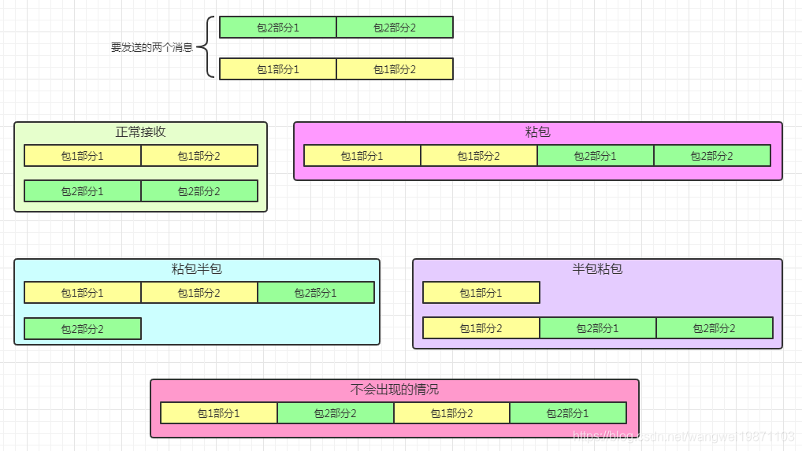
如何解决粘包半包问题
三种解决方案：
固定长度
分隔符分割
基于可变长度
固定长度：基本的思想就是我在消息最前面的几个字节加上消息体的长度，或者是总共消息的大小，反正只要你能解析出前几个字节表示的数，你就能知道后面还有多少个字节是属于这个消息的。当然具体的问题看到比较复杂，比如你需要有个字节的缓存，因为你可能受到了消息某个消息的一部分，还需要接受另一部分，所以要保存起来。比如这种，消息前
4个字节是消息体的长度，这样你读完前4个之后，你就知道还要读多少个就可以拼成一个完整的消息啦，不过这种还是要约定的，比如约定前面4个字节是消息体长度：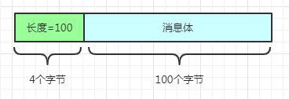
netty的编解码器：
netty提供了一个抽象类ByteToMessageDecoder来完成解码器的基本流程，当然也给了很多子类实现，大多数我们需要的都有了，比如固定长度，分割符，行分割，基于长度的等等。同理还有编码的MessageToByteEncoder。其实他们都是Handler，只要在入站或者出站的时候先进过他们，能有完整的消息了，再往后传递，这样后续的处理器接受的肯定是完整的包了，不完整的不会接受到。
二、ByteToMessageDecoder
主要解决固定长度拆包粘包问题。字节到消息的编码器，因此应该是实现入站操作的，这类解码器处理器都不是共享的，因为需要存还没有解码完的数据，还有各种状态，是独立的，不能进行共享。
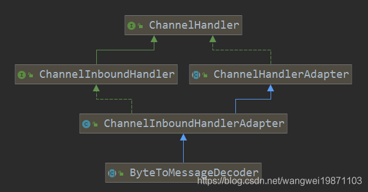
重要属性
161//状态码2private static final byte STATE_INIT = 0;//初始状态3private static final byte STATE_CALLING_CHILD_DECODE = 1;//正在调用子类解码4private static final byte STATE_HANDLER_REMOVED_PENDING = 2;//处理器待删除5
6ByteBuf cumulation;//累加缓冲区7private Cumulator cumulator = MERGE_CUMULATOR;//默认是合并累加器8private boolean singleDecode;//是否只解码一次9private boolean first;//是否是第一次累加缓冲区10private boolean firedChannelRead;//自动读取是false的时候，是否要去调用ChannelHandlerContext的read()来设置监听读事件，可能没读完11
12
13//状态14private byte decodeState = STATE_INIT;15private int discardAfterReads = 16;//读取16个字节后丢弃已读的16private int numReads;//cumulation读取数据的次数 内部会维护一个状态decodeState ，以便于如果在执行解码的时候处理器上下文被删除了，可以及时响应。
还有一个累加缓冲区，如果有不能拼成一个消息的数据会放入这个缓冲区里，等待下一次继续拼。当然累加缓冲区怎么累加，就需要有累加器，默认是合并累加器MERGE_CUMULATOR。
MERGE_CUMULATOR合并累加器
主要是做一般缓冲区的合并，直接将新的缓冲区拷贝到累加缓冲区中。
231public static final Cumulator MERGE_CUMULATOR = new Cumulator() {2 3 public ByteBuf cumulate(ByteBufAllocator alloc, ByteBuf cumulation, ByteBuf in) {4 if (!cumulation.isReadable() && in.isContiguous()) {//累计的不可读(比如为空缓冲区)，且新的是连续的，不是符合缓冲区，释放老的，返回新的5 cumulation.release();6 return in;7 }8 try {9 final int required = in.readableBytes();10 if (required > cumulation.maxWritableBytes() ||11 (required > cumulation.maxFastWritableBytes() && cumulation.refCnt() > 1) ||12 cumulation.isReadOnly()) {//扩容了13
14 return expandCumulation(alloc, cumulation, in);15 }16 cumulation.writeBytes(in, in.readerIndex(), required);//将in写入17 in.readerIndex(in.writerIndex());//in不可读了18 return cumulation;19 } finally {20 in.release();//返回前要释放in21 }22 }23};COMPOSITE_CUMULATOR复合累加器
另一个是复合累加器，也就是处理复合缓冲区，默认累加缓冲区也会是复合缓冲区。如果添加进来的缓冲区不可读，那就什么都不做，也就是复合缓冲区的累加方式。
311public static final Cumulator COMPOSITE_CUMULATOR = new Cumulator() {2 3 public ByteBuf cumulate(ByteBufAllocator alloc, ByteBuf cumulation, ByteBuf in) {4 if (!cumulation.isReadable()) {//不可读了，直接返回in5 cumulation.release();6 return in;7 }8 CompositeByteBuf composite = null;9 try {10 if (cumulation instanceof CompositeByteBuf && cumulation.refCnt() == 1) {//累计的是复合缓冲区且无其他引用11 composite = (CompositeByteBuf) cumulation;12
13 if (composite.writerIndex() != composite.capacity()) {//更新容量到写索引处14 composite.capacity(composite.writerIndex());15 }16 } else {//如果不是复合缓冲区，就创建一个复合缓冲区把累计的添加进来17 composite = alloc.compositeBuffer(Integer.MAX_VALUE).addFlattenedComponents(true, cumulation);18 }19 composite.addFlattenedComponents(true, in);//再添加in20 in = null;21 return composite;22 } finally {23 if (in != null) {//有异常，要释放缓冲区24 in.release();25 if (composite != null && composite != cumulation) {//有新的缓冲区申请的话也要释放26 composite.release();27 }28 }29 }30 }31};抽象方法decode
其实有一个抽象方法需要子类实现，那就是具体的解码方法，参数in就是累加缓冲区，out可以理解为一个列表，存放解码后的对象。
11protected abstract void decode(ChannelHandlerContext ctx, ByteBuf in, List<Object> out) throws Exception;channelRead读方法
解码器也是一个处理器，只是在业务处理器前面做解码用，当然也是在读数据的地方做处理。CodecOutputList暂时不用管，就当一个列表，存放解码出来的消息就行。其实流程就是将新来的缓冲区msg加到累加的缓冲区cumulation中，然后返回的又赋值给cumulation，这样就做到了合并了，然后去进行解码，解码的结果放入列表out 中。最后再进行资源的释放，往后传递消息和列表的回收。
431public void channelRead(ChannelHandlerContext ctx, Object msg) throws Exception {3 //只处理字节缓冲区类型的4 if (msg instanceof ByteBuf) {5 CodecOutputList out = CodecOutputList.newInstance();6 try {7 first = cumulation == null;8 cumulation = cumulator.cumulate(ctx.alloc(),9 first ? Unpooled.EMPTY_BUFFER : cumulation, (ByteBuf) msg);//累加10 // ---看5.1步---11 callDecode(ctx, cumulation, out);12 } catch (DecoderException e) {13 throw e;14 } catch (Exception e) {15 throw new DecoderException(e);16 } finally {17 //不为空也不可读，要释放18 if (cumulation != null && !cumulation.isReadable()) {19 numReads = 0;20 cumulation.release();21 cumulation = null;22 23 //读取数据的次数大于阈值，则尝试丢弃已读的，避免占着内存24 } else if (++ numReads >= discardAfterReads) {25
26 numReads = 0;27 discardSomeReadBytes();28 }29
30 int size = out.size();31 32 //有被添加或者设置，表是有读过了33 firedChannelRead |= out.insertSinceRecycled();34 // ---看5.2步---35 //尝试传递数据36 fireChannelRead(ctx, out, size);37 out.recycle();38 }39 } else {40 //其他类型继续传递41 ctx.fireChannelRead(msg);42 }43}callDecode解码
只要判断新的缓冲区in还有可读的，就进行解码，当然最开始消息列表out是空的，所以就进行子类来解码decodeRemovalReentryProtection，解码后看是否真正读取了缓冲区的内容，如果没读，说明不符合子类解码器的要求，就跳出循环了。如果能读取，就判断是否只解码一次，是就跳出，不是就继续读取来解码，解码好的消息会马上传递给后面，并把消息列表清空，当然这里不一定一次解码1个消息，也可能一次很多个。当然每次完成解码或者传递消息后要进行上下文是否被移除的检查，如果被移除了，就不能再进行处理了。
471protected void callDecode(ChannelHandlerContext ctx, ByteBuf in, List<Object> out) {2 try {3 while (in.isReadable()) {//有可读的4 int outSize = out.size();//数量5
6 if (outSize > 0) {//有消息解码出来就先传递了7 fireChannelRead(ctx, out, outSize);//有解码好的数据就传递给后面8 out.clear();//清空9
10 if (ctx.isRemoved()) {//上下文被删除了就不处理了11 break;12 }13 outSize = 0;14 }15 //继续解码16 int oldInputLength = in.readableBytes();//还以后多少字节可读17 // ---往下看1---18 decodeRemovalReentryProtection(ctx, in, out);//解码19
20 if (ctx.isRemoved()) {21 break;22 }23
24 if (outSize == out.size()) {//没有生成新的消息，可能要求不够无法解码出一个消息25 if (oldInputLength == in.readableBytes()) {//没有读取数据26 break;27 } else {28 continue;29 }30 }31
32 if (oldInputLength == in.readableBytes()) {//解码器没有读数据33 throw new DecoderException(34 StringUtil.simpleClassName(getClass()) +35 ".decode() did not read anything but decoded a message.");36 }37
38 if (isSingleDecode()) {//是否每次只解码一条，就返回39 break;40 }41 }42 } catch (DecoderException e) {43 throw e;44 } catch (Exception cause) {45 throw new DecoderException(cause);46 }47}
decodeRemovalReentryProtection调用子类来解码，主要是调用子类实现的
decode方法来解码，最后会考虑处理器是否被删除了，做一些处理。161final void decodeRemovalReentryProtection(ChannelHandlerContext ctx, ByteBuf in, List<Object> out)2throws Exception {3decodeState = STATE_CALLING_CHILD_DECODE;//设置为子类解码4try {5// ---往下看---6decode(ctx, in, out);//调用子类解码7} finally {8boolean removePending = decodeState == STATE_HANDLER_REMOVED_PENDING;//是否待删除状态9decodeState = STATE_INIT;//处理完了设置为初始化10if (removePending) {//如果有被设置待删除状态，就马上处理11fireChannelRead(ctx, out, out.size());//把数据传出去12out.clear();//清空13handlerRemoved(ctx);//删除14}15}16}decode，解码，调用自定义的解码方法
decode，然后把结果放进消息队列out中。具体的解码就是看可读数据是否大于等于固定长，如果是，就进行缓冲区的保留切片，切出固定长的缓冲区。这里为什么要保留切片呢，因为切片是共享原缓冲区的数据的，如果源缓冲区用完了可能被释放，所以需要保留一下，增加引用计数，当然在切片释放的时候，也会释放源缓冲区的。
注意如果没达到解码器要求的，可能不会去读取缓冲区数据。
1812protected final void decode(ChannelHandlerContext ctx, ByteBuf in, List<Object> out) throws Exception {3Object decoded = decode(ctx, in);4if (decoded != null) {5out.add(decoded);6}7}8protected Object decode(10("UnusedParameters") ChannelHandlerContext ctx, ByteBuf in) throws Exception {11//如果可读字节的小于固定长度，什么都不做12if (in.readableBytes() < frameLength) {13return null;14} else {15//返回的是切片,会增加in引用计数，防止被回收了16return in.readRetainedSlice(frameLength);17}18}
fireChannelRead传递消息列表中的消息
这个方法是个用来传递消息列表中的所有消息的，判断消息列表是不是CodecOutputList类型，是的话就调用相应的获取方法getUnsafe来传递，这个获取消息的方法可能是不安全的，因为没做索引的越界检查，可能会越界。如果是一般的列表，就直接调用get方法获得。
201static void fireChannelRead(ChannelHandlerContext ctx, List<Object> msgs, int numElements) {2 if (msgs instanceof CodecOutputList) {//如果是CodecOutputList类型的3 fireChannelRead(ctx, (CodecOutputList) msgs, numElements);4 } else {//正常获取对象，传递下去5 for (int i = 0; i < numElements; i++) {6 ctx.fireChannelRead(msgs.get(i));//传递每一个7 }8 }9}10
11// 传递CodecOutputList中的每一个对象12static void fireChannelRead(ChannelHandlerContext ctx, CodecOutputList msgs, int numElements) {13 for (int i = 0; i < numElements; i ++) {14 ctx.fireChannelRead(msgs.getUnsafe(i));15 }16}17
18Object getUnsafe(int index) {19 return array[index];20}channelReadComplete读完成方法
当数据读取完成的时候，会尝试去丢弃discardSomeReadBytes累加缓冲区的已读信息，虽然可能要进行拷贝消耗点新能，但是放在那里浪费内存，所以就先丢弃了。之后判断是否有读取过缓存区的内容，如果没读到数据（可能没达到解码器要求，不读取数据），且没设置自动去读的，就手动设置一次监听读事件，可能后面还有部分没发过来，发过来了就可以解码拼成一个完整消息了。最后在传递读完成事件。
121public void channelReadComplete(ChannelHandlerContext ctx) throws Exception {3 numReads = 0;4 // ---看6.1步---5 discardSomeReadBytes();6 //如果没有读到数据，且没有自动开启读，就设置读事件7 if (!firedChannelRead && !ctx.channel().config().isAutoRead()) {8 ctx.read();9 }10 firedChannelRead = false;11 ctx.fireChannelReadComplete();12}discardSomeReadBytes丢弃已读数据
如果缓冲区不为空，而且没有别的引用指向他，就丢弃已读的数据。
61protected final void discardSomeReadBytes() {2 //当引用值有1的时候丢弃，否则用户可能有其他用就不能直接丢弃3 if (cumulation != null && !first && cumulation.refCnt() == 1) {4 cumulation.discardSomeReadBytes();5 }6}decodeLast最后解码
在通道失效之前，会进行最后一次解码，以便于取出剩下的数据解码，当然如果没有数据，那等于什么都没做：
61protected void decodeLast(ChannelHandlerContext ctx, ByteBuf in, List<Object> out) throws Exception {2 //如果还能读的话把剩下的解码3 if (in.isReadable()) {4 decodeRemovalReentryProtection(ctx, in, out);5 }6}FixedLengthFrameDecoder
ByteToMessageDecoder子类，固定长度解码，只要到了这个长度，就切片这个长度的缓冲区当做一个消息。
301public class FixedLengthFrameDecoder extends ByteToMessageDecoder {2
3 //固定一帧的长度4 private final int frameLength;5
6
7 public FixedLengthFrameDecoder(int frameLength) {8 checkPositive(frameLength, "frameLength");9 this.frameLength = frameLength;10 }11
12 13 protected final void decode(ChannelHandlerContext ctx, ByteBuf in, List<Object> out) throws Exception {14 Object decoded = decode(ctx, in);15 if (decoded != null) {16 out.add(decoded);17 }18 }19
20 protected Object decode(21 ("UnusedParameters") ChannelHandlerContext ctx, ByteBuf in) throws Exception {22 //如果可读字节的小于固定长度，什么都不做23 if (in.readableBytes() < frameLength) {24 return null;25 } else {26 //返回的是切片,会增加in引用计数，防止被回收了27 return in.readRetainedSlice(frameLength);28 }29 }30}三、LineBasedFrameDecoder
这个是换行符"\r\n"或者"\n"的分割，涉及到是否要分隔符，没读到分隔符要丢弃已读的数据，就算后面读到了分隔符，但是是属于前面丢弃的后半部分，所以也不要了。光说比较难懂，后面会画图解释的，先看一些属性，了解下可能会用的到。
属性
121
2//超过长度是否马上抛出异常，无论是不是把数据全读完了，true超过就抛，false读完整个数据后抛3private final boolean failFast;4//解码后的数据是否要去除分割符5private final boolean stripDelimiter;6//是否正在丢弃输入数据7private boolean discarding;8//丢弃的数据长度9private int discardedBytes;10
11/** Last scan position. */12private int offset;//最后一次扫描的索引位置构造器
81public LineBasedFrameDecoder(final int maxLength) {2 this(maxLength, true, false);3}4public LineBasedFrameDecoder(final int maxLength, final boolean stripDelimiter, final boolean failFast) {5 this.maxLength = maxLength;6 this.failFast = failFast;7 this.stripDelimiter = stripDelimiter;8}解码方法
81//跟固定长度的那个一样2protected final void decode(ChannelHandlerContext ctx, ByteBuf in, List<Object> out) throws Exception {4 Object decoded = decode(ctx, in);5 if (decoded != null) {6 out.add(decoded);7 }8}decode内部方法
4种情况：
上一次没有丢弃可读数据过的。如果找到分割符了，如果长度没超出，就根据是否要略过分隔符返回相应长度的切片，如果超出了就设置读索到分隔符之后并抛出异常。
上一次没有丢弃可读数据过的。如果没找到分隔符，长度又超过了最大长度就丢弃，设置丢弃数量，设置读索引到最后。根据需求抛出异常。
上一次有丢弃可读数据过的。如果找到分割符了，不处理，直接设置读索引到分隔符之后，因为这个是上一次丢弃的那部分所属的同一个消息的，都不要了。
上一次有丢弃可读数据过的。如果没有找到分割符了，继续丢弃，直接略过可读的数据。
561protected Object decode(ChannelHandlerContext ctx, ByteBuf buffer) throws Exception {2 // ---看3.1.1步---3 final int eol = findEndOfLine(buffer);4 if (!discarding) {//没有丢弃过可读的5 if (eol >= 0) {//找到分割符了6 final ByteBuf frame;7 final int length = eol - buffer.readerIndex();//8 final int delimLength = buffer.getByte(eol) == '\r'? 2 : 1;//如果是'\r'，分割符是2个字节'\r\n',否则是一个'\n'9
10 if (length > maxLength) {//可读数据超过最大长度了，直接不要了11 buffer.readerIndex(eol + delimLength);//设置读索引为分隔符索引之后12 // ---看3.1.2步---13 fail(ctx, length);//直接抛异常14 return null;15 }16
17 if (stripDelimiter) {//如果略过分隔符的18 frame = buffer.readRetainedSlice(length);//获取长度为length的切片19 buffer.skipBytes(delimLength);//buffer略过分隔符20 } else {21 frame = buffer.readRetainedSlice(length + delimLength);//包括分隔符在内的切片22 }23
24 return frame;25 } else {//没找到分割符，不会读取，不改变读索引26 final int length = buffer.readableBytes();27 if (length > maxLength) {//超过最大长度，也没找到分隔符28 discardedBytes = length;//丢弃可读的29 buffer.readerIndex(buffer.writerIndex());//直接略过可读的，设置为不可读30 discarding = true;//有丢弃了31 offset = 0;32 if (failFast) {33 fail(ctx, "over " + discardedBytes);34 }35 }36 return null;37 }38 } else {39 if (eol >= 0) {//前面有丢弃的话，后面跟着的也不要了40 final int length = discardedBytes + eol - buffer.readerIndex();41 final int delimLength = buffer.getByte(eol) == '\r'? 2 : 1;42 buffer.readerIndex(eol + delimLength);//直接略过前面的一部分了43 discardedBytes = 0;44 discarding = false;45 if (!failFast) {46 fail(ctx, length);47 }48 } else {//还是没找到分隔符49 discardedBytes += buffer.readableBytes();//增加丢弃数量50 buffer.readerIndex(buffer.writerIndex());//直接略过可读的，设置为不可读51 // We skip everything in the buffer, we need to set the offset to 0 again.52 offset = 0;53 }54 return null;55 }56}findEndOfLine寻找换行分隔符的位置
可能是换行符"\r\n"或者"\n"，所以位置会相差1，如果找到了索引offset 就从0开始，否则就从上一次长度的最后开始。
141private int findEndOfLine(final ByteBuf buffer) {2 int totalLength = buffer.readableBytes();3 int i = buffer.forEachByte(buffer.readerIndex() + offset, totalLength - offset, ByteProcessor.FIND_LF);4 if (i >= 0) {//找到了换行符5 offset = 0;6 //如果索引不是0，且前一个是'\r'，就返回前一个的索引7 if (i > 0 && buffer.getByte(i - 1) == '\r') {8 i--;9 }10 } else {11 offset = totalLength;12 }13 return i;14}fail抛出异常
101private void fail(final ChannelHandlerContext ctx, int length) {2 fail(ctx, String.valueOf(length));3}4
5//超出长度报异常6private void fail(final ChannelHandlerContext ctx, String length) {7 ctx.fireExceptionCaught(8 new TooLongFrameException(9 "frame length (" + length + ") exceeds the allowed maximum (" + maxLength + ')'));10}图示举例：
黄色是我们要读取的数据，绿色的是被解码出的消息数据，我们设置编码器可以解码的最大长度是4，其他参数默认。
初始状态：
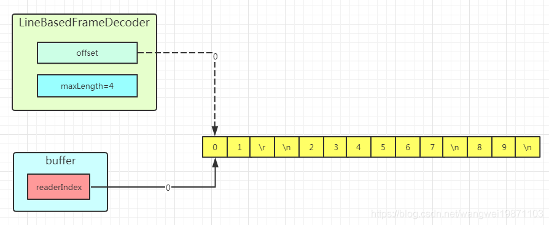
第一次读取，返回绿色的切片：
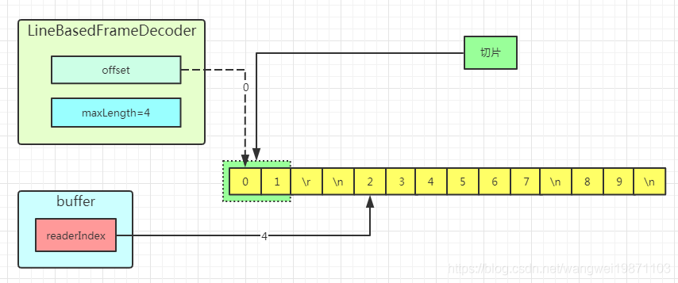
第二次读取的数据长度超出最大长度4了：
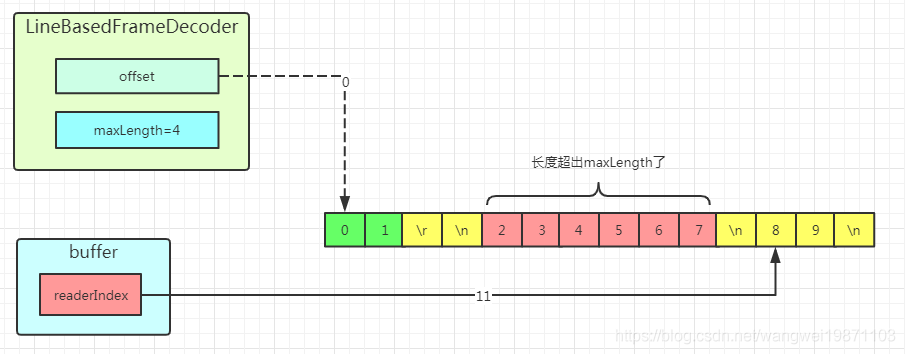
第三次读取最后两个，返回绿色切片：
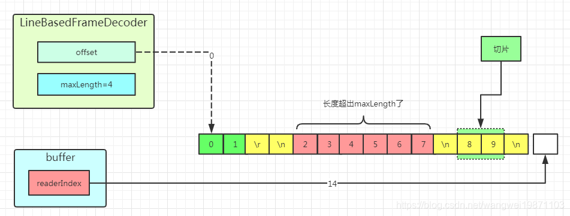
分几个包的的情况
首先第一次接收"01"，因为没遇到换行符，所以offset=2，返回null:
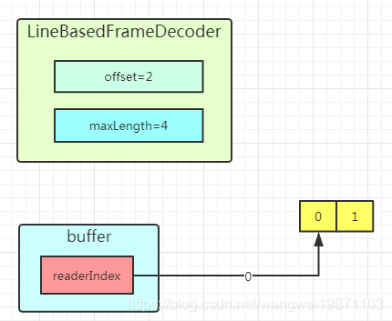
第二次接收"23\n2",返回绿色的切片:
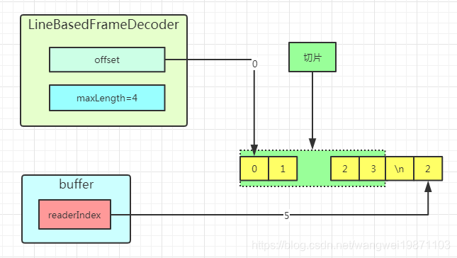
分包丢弃的情况
第一次是这样，因为个数超过最大长度，所以会被丢弃，缓冲区也会被释放。
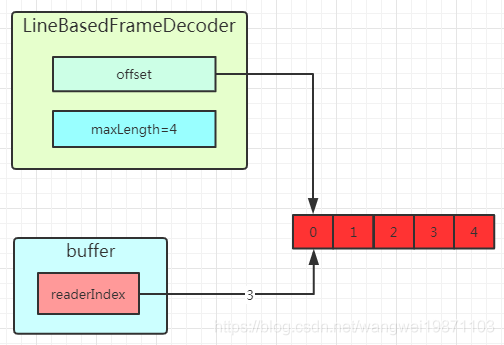
第二次收到后，发现是前面丢弃的另一部分，所以一起丢弃。
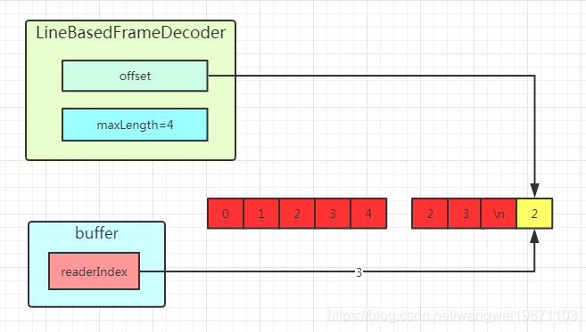
四、CodecOutputList
介绍
CodecOutputList可以简单的理解为一个列表，里面存放我们解码后的消息，很多解码器里都会用到，所以还是要知道下，我们解码后的对象就是放入这个表里的，解码后传递给后续处理器的也是这里面的消息对象。
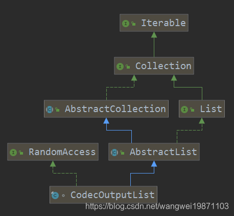
里面放的消息就是我们处理器经常用到的msg：
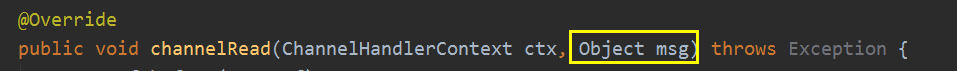
大致结构图就是这个样子的：
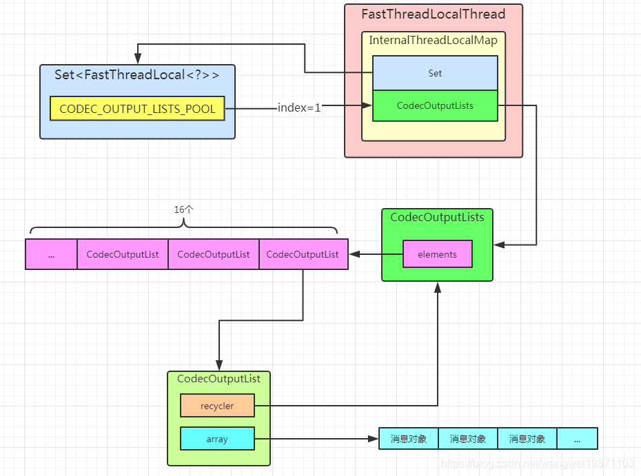
重要属性
看看里面放着什么东西，首先他会有一个回收器，这个是跟线程本地变量挂钩的，就是一个池化的作用。里面存放着一个数组就是解码后的消息对象。
51//回收器2private final CodecOutputListRecycler recycler;3private int size;//拥有的对象个数4private Object[] array;//对象数组5private boolean insertSinceRecycled;//是否有对象加入数组过回收器
首先定义了一个回收器接口，然后创建了一个啥都没干的回收器，等GC处理了。
101private interface CodecOutputListRecycler {2 void recycle(CodecOutputList codecOutputList);3}4
5private static final CodecOutputListRecycler NOOP_RECYCLER = new CodecOutputListRecycler() {6 7 public void recycle(CodecOutputList object) {8 // drop on the floor and let the GC handle it.9 }10};线程本地变量
线程本地变量就可以跟着线程一起存活着，等于有了池化的作用，而且是线程安全的，存在IO线程里。默认初始化是生成一个CodecOutputLists，这个是什么，我猜就是个CodecOutputList集合。
81private static final FastThreadLocal<CodecOutputLists> CODEC_OUTPUT_LISTS_POOL =2 new FastThreadLocal<CodecOutputLists>() {3 4 protected CodecOutputLists initialValue() throws Exception {5 // 16 CodecOutputList per Thread are cached.6 return new CodecOutputLists(16);7 }8 };CodecOutputLists
里面放着很多CodecOutputList，然后实现了回收器接口CodecOutputListRecycler，用来回收CodecOutputList。
内部创建了一个CodecOutputList数组，默认每个CodecOutputList可以存放16个消息对象。有CodecOutputList了，就会创建一个不缓存的CodecOutputList，默认存放4个消息对象。
411private static final class CodecOutputLists implements CodecOutputListRecycler {2 private final CodecOutputList[] elements;3 private final int mask;//取余掩码4
5 private int currentIdx;//当前索引6 private int count;//列表个数7
8 CodecOutputLists(int numElements) {9 elements = new CodecOutputList[MathUtil.safeFindNextPositivePowerOfTwo(numElements)];//创建2的幂次个列表10 for (int i = 0; i < elements.length; ++i) {//初始化11 // Size of 16 should be good enough for the majority of all users as an initial capacity.12 elements[i] = new CodecOutputList(this, 16);13 }14 count = elements.length;15 currentIdx = elements.length;16 mask = elements.length - 1;17 }18 //如果没缓存就创建一个不缓存的，默认创建长度为4的数组19 public CodecOutputList getOrCreate() {20 if (count == 0) {21 // Return a new CodecOutputList which will not be cached. We use a size of 4 to keep the overhead22 // low.23 return new CodecOutputList(NOOP_RECYCLER, 4);24 }25 --count;26
27 int idx = (currentIdx - 1) & mask;//从后往前取，取模，算出索引位置28 CodecOutputList list = elements[idx];29 currentIdx = idx;30 return list;31 }32 //回收CodecOutputList33 34 public void recycle(CodecOutputList codecOutputList) {35 int idx = currentIdx;36 elements[idx] = codecOutputList;37 currentIdx = (idx + 1) & mask;//当前索引增加，取模38 ++count;39 assert count <= elements.length;40 }41}newInstance获取CodecOutputList对象
外面是通过CodecOutputList 的newInstance来获得对象，其实是从线程本地变量的CodecOutputLists里获取的。
31static CodecOutputList newInstance() {2 return CODEC_OUTPUT_LISTS_POOL.get().getOrCreate();3}构造器
构造方法的时候就会传入回收器和消息对象数组的长度。
41private CodecOutputList(CodecOutputListRecycler recycler, int size) {2 this.recycler = recycler;3 array = new Object[size];4}get有检查获取消息对象
有检查的获取，外部使用
51public Object get(int index) {3 checkIndex(index);4 return array[index];5}getUnsafe无检查获取消息对象
少了检查，内部使用的。
31Object getUnsafe(int index) {2 return array[index];3}insert插入对象到指定位置
直接把对象放入指定数组的位置，设置标记。
51//放入数组2private void insert(int index, Object element) {3 array[index] = element;4 insertSinceRecycled = true;//有放入过了5}add添加对象到最后
直接插入，如果越界就扩容，再插入。
121public boolean add(Object element) {3 checkNotNull(element, "element");4 try {5 insert(size, element);//插入6 } catch (IndexOutOfBoundsException ignore) {7 expandArray();//扩容8 insert(size, element);//插入9 }10 ++ size;11 return true;12}add添加对象到指定位置
先判断是否要扩容，然后进行数组拷贝，也就是移动里面的元素，腾出指定位置，然后插入指定位置。
161public void add(int index, Object element) {3 checkNotNull(element, "element");4 checkIndex(index);5
6 if (size == array.length) {7 expandArray();//扩容8 }9
10 if (index != size) {11 System.arraycopy(array, index, array, index + 1, size - index);//拷贝指定位置以及之后的对象，就是向后移动数组12 }13
14 insert(index, element);15 ++ size;16}remove删除指定位置的对象
把指定位置的对象取出来，然后移动数组，最后位置清空，并返回删除的对象。
131public Object remove(int index) {3 checkIndex(index);4 Object old = array[index];5
6 int len = size - index - 1;7 if (len > 0) {8 System.arraycopy(array, index + 1, array, index, len);//向前移动数组9 }10 array[-- size] = null;//最后位置清空11
12 return old;13}clear清空
只是把个数清空了。真正的删除元素是在recycle中的。
41public void clear() {3 size = 0;4}recycle清空对象并回收到CodecOutputLists中
91void recycle() {2 for (int i = 0 ; i < size; i ++) {3 array[i] = null;4 }5 size = 0;6 insertSinceRecycled = false;7
8 recycler.recycle(this);9}expandArray扩容数组
扩容，每次2倍，直到溢出位置。
131private void expandArray() {2 // double capacity3 int newCapacity = array.length << 1;4
5 if (newCapacity < 0) {//溢出了6 throw new OutOfMemoryError();7 }8
9 Object[] newArray = new Object[newCapacity];10 System.arraycopy(array, 0, newArray, 0, array.length);11
12 array = newArray;13}五、MessageToByteEncoder
编码器，就是将一个消息编码下，编码成我们的字节数组形式。我们看到这个地方是有泛型了，为什么解码器没有呢，因为解码是把字节数组变成对象。而编码器的泛型是针对特定类型的编码，不告诉什么类型，没办法编码，
解码是针对入站数据，那编码就是出站啦，结构就是这样：

抽象方法：
11protected abstract void encode(ChannelHandlerContext ctx, I msg, ByteBuf out) throws Exception;主要也是靠子类来实现编码方法的。
六、TypeParameterMatcher
是个抽象类，内部有个类型参数匹配器，也就是上面说的泛型的，只有匹配到相应的泛型，才会进行解码，否则就往前传递。他也是存在于线程本地变量中，在UnpaddedInternalThreadLocalMap中：
41//类型和参数类型匹配器的map2Map<Class<?>, TypeParameterMatcher> typeParameterMatcherGetCache;3//类型和类型和参数类型匹配器的map4Map<Class<?>, Map<String, TypeParameterMatcher>> typeParameterMatcherFindCache;抽象方法：
11public abstract boolean match(Object msg);空类型参数匹配
这个就是任何对象类型都能匹配。
61private static final TypeParameterMatcher NOOP = new TypeParameterMatcher() {2 3 public boolean match(Object msg) {4 return true;5 }6};get获取类型参数匹配器
会根据传进来得Class对象，判断是哪个类型，从而生成相应的匹配器，如果是Object，就是上面的NOOP ，否则就是ReflectiveMatcher。这个就是根据类型获取参数类型匹配器，就是用到上面你的UnpaddedInternalThreadLocalMap的typeParameterMatcherGetCache
161public static TypeParameterMatcher get(final Class<?> parameterType) {2 final Map<Class<?>, TypeParameterMatcher> getCache =3 InternalThreadLocalMap.get().typeParameterMatcherGetCache();4
5 TypeParameterMatcher matcher = getCache.get(parameterType);6 if (matcher == null) {7 if (parameterType == Object.class) {8 matcher = NOOP;9 } else {10 matcher = new ReflectiveMatcher(parameterType);11 }12 getCache.put(parameterType, matcher);13 }14
15 return matcher;16}ReflectiveMatcher
其实就是实现match方法，把相关的类型保存，然后匹配的时候看是否是这个类型的实例。
121private static final class ReflectiveMatcher extends TypeParameterMatcher {2 private final Class<?> type;3
4 ReflectiveMatcher(Class<?> type) {5 this.type = type;6 }7
8 9 public boolean match(Object msg) {10 return type.isInstance(msg);11 }12}find寻找泛型对应的匹配器
这里首先还是从线程本地变量里获取UnpaddedInternalThreadLocalMap的typeParameterMatcherFindCache，然后根据当前对象获取对应的Map<String, TypeParameterMatcher>。如果不存在，就用反射来找出泛型的具体类型，最后根据类型返回匹配器，中间还会缓存类型和匹配器的映射关系。
221public static TypeParameterMatcher find(2 final Object object, final Class<?> parametrizedSuperclass, final String typeParamName) {3
4 final Map<Class<?>, Map<String, TypeParameterMatcher>> findCache =5 InternalThreadLocalMap.get().typeParameterMatcherFindCache();6 final Class<?> thisClass = object.getClass();7
8 Map<String, TypeParameterMatcher> map = findCache.get(thisClass);9 if (map == null) {10 map = new HashMap<String, TypeParameterMatcher>();11 findCache.put(thisClass, map);12 }13
14 TypeParameterMatcher matcher = map.get(typeParamName);15 if (matcher == null) {16 // ---看4.1步---17 matcher = get(find0(object, parametrizedSuperclass, typeParamName));18 map.put(typeParamName, matcher);19 }20
21 return matcher;22 }find0
这个方法基本就是用反射，根据当前对象获取泛型I的真实类型。具体代码我就不分析了，比较繁琐，你知道是通过反射分析出具体的泛型类型就好了。
图示结构
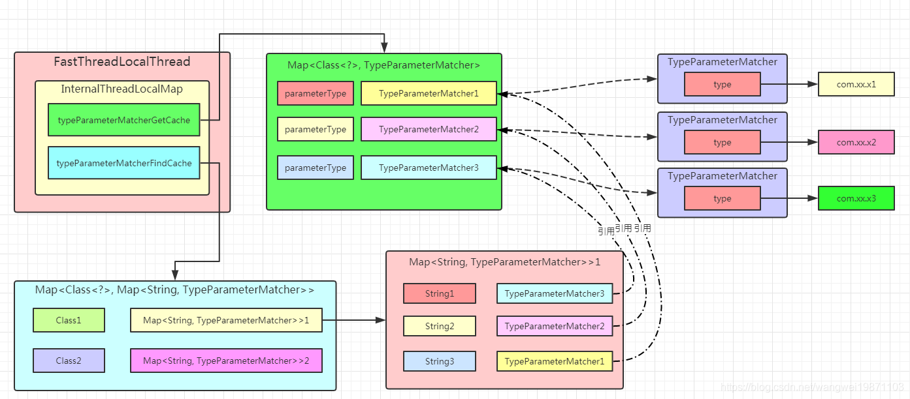
显示构造函数
这个构造函数传了要匹配的类型，直接去获取匹配器即可。这里就是直接parameterType和TypeParameterMatcher对应起来了。
41protected MessageToByteEncoder(Class<? extends I> outboundMessageType, boolean preferDirect) {2 matcher = TypeParameterMatcher.get(outboundMessageType);3 this.preferDirect = preferDirect;4}隐式构造函数
这个两个构造函数没有传类型，而是传了字符串I，也就是底层会通过反射出泛型的具体类型，然后获得匹配器。这里是通过当前对象的Class对象比如Class1，对应找到HashMap<String, TypeParameterMatcher>()，通过字符串I再找到TypeParameterMatcher。在这个过程中，会将I对应的具体类型parameterType和TypeParameterMatcher也放入UnpaddedInternalThreadLocalMap的typeParameterMatcherGetCache缓存中。
81protected MessageToByteEncoder() {2 this(true);3}4
5protected MessageToByteEncoder(boolean preferDirect) {6 matcher = TypeParameterMatcher.find(this, MessageToByteEncoder.class, "I");7 this.preferDirect = preferDirect;8}write写方法
关键还是写方法，他会判断消息是否是类型匹配的，是的话才会申请一个缓冲区，然后进行编码，不是就直接往前传递了。编码完了会尝试释放消息。如果编码失败，就往前写一个空缓冲区，把申请的缓冲区释放了。
431public void write(ChannelHandlerContext ctx, Object msg, ChannelPromise promise) throws Exception {3 ByteBuf buf = null;4 try {5 if (acceptOutboundMessage(msg)) {6 ("unchecked")7 I cast = (I) msg;8 buf = allocateBuffer(ctx, cast, preferDirect);9 try {10 encode(ctx, cast, buf);11 } finally {12 ReferenceCountUtil.release(cast);13 }14
15 if (buf.isReadable()) {16 ctx.write(buf, promise);17 } else {18 buf.release();19 ctx.write(Unpooled.EMPTY_BUFFER, promise);20 }21 buf = null;22 } else {23 ctx.write(msg, promise);24 }25 } catch (EncoderException e) {26 throw e;27 } catch (Throwable e) {28 throw new EncoderException(e);29 } finally {30 if (buf != null) {31 buf.release();32 }33 }34}35public boolean acceptOutboundMessage(Object msg) throws Exception {36 return matcher.match(msg);37}38public static boolean release(Object msg) {39 if (msg instanceof ReferenceCounted) {40 return ((ReferenceCounted) msg).release();41 }42 return false;43}allocateBuffer申请缓冲区
如果优先是直接缓冲区，就会申请直接缓冲区，否则就是堆内缓冲区。
81protected ByteBuf allocateBuffer(ChannelHandlerContext ctx, ("unused") I msg,2 boolean preferDirect) throws Exception {3 if (preferDirect) {4 return ctx.alloc().ioBuffer();5 } else {6 return ctx.alloc().heapBuffer();7 }8}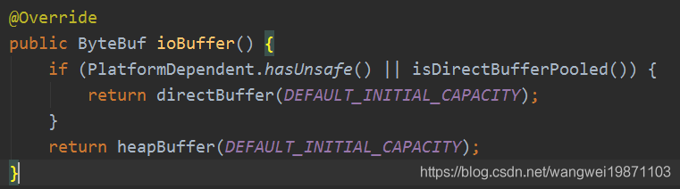
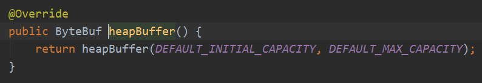
简单的例子
编码为Long 类型：
81public class LongToByteEncoder extends MessageToByteEncoder<Long> {2
3 4 protected void encode(ChannelHandlerContext ctx, Long msg, ByteBuf out) throws Exception {5 out.writeLong(msg);6
7 }8} 解码器，上篇说过了粘包拆包问题，所以得有判断是否足够Long的字节：
91public class ByteToLongDecoder extends ByteToMessageDecoder {2 3 protected void decode(ChannelHandlerContext ctx, ByteBuf in, List<Object> out) throws Exception {4
5 if(in.readableBytes() >= 8) {6 out.add(in.readLong());7 }8 }9}}